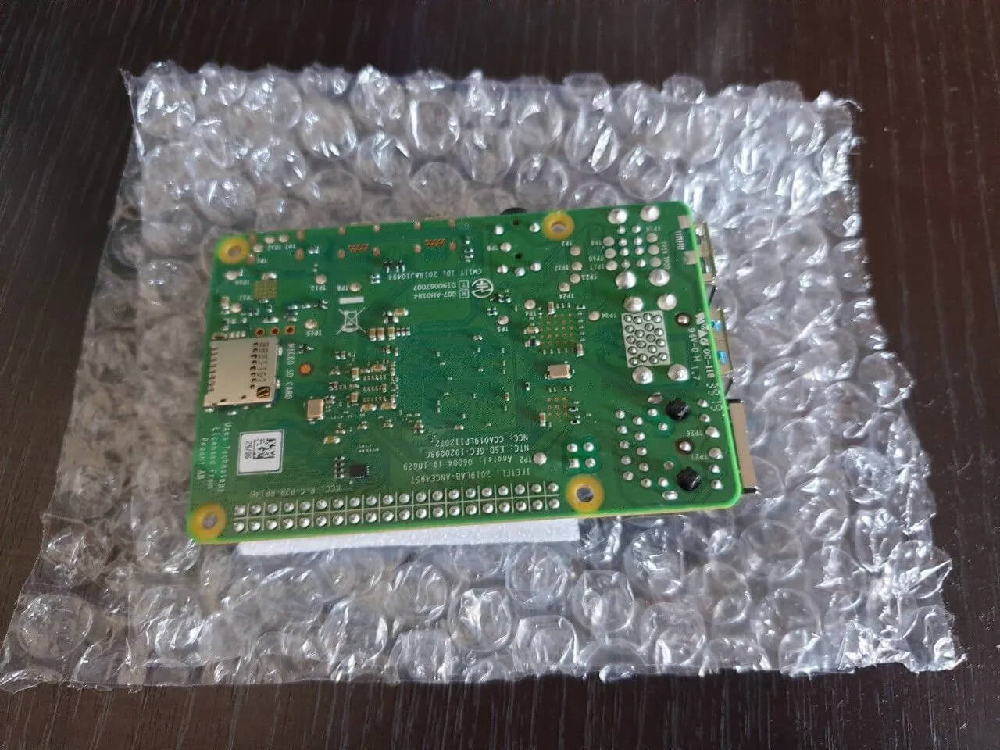
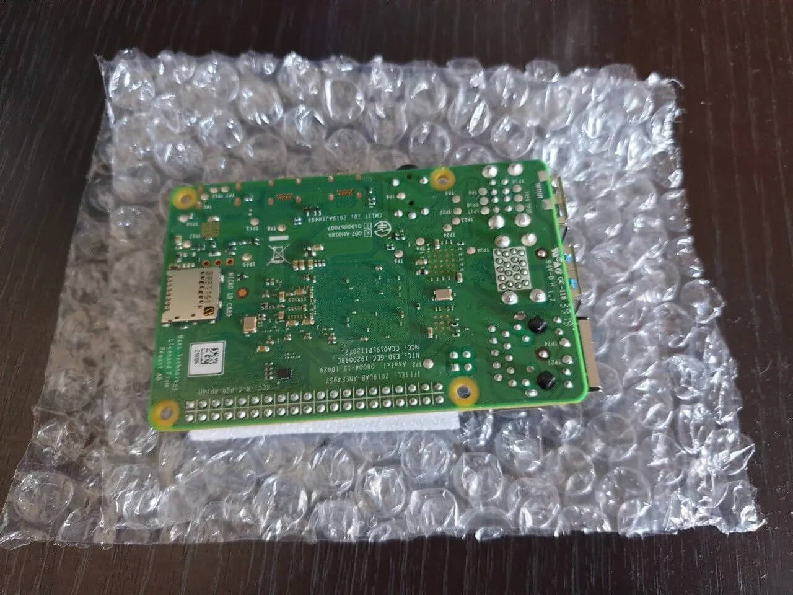

В качестве устройства для хостинга HyperHDR довольно часто используется одноплатный компьютер Raspberry Pi - одним из основных его плюсов являются его габаритные размеры соизмеримые с обычной банковской карточкой. К сожалению, ситуация с доступностью Raspberry Pi пока не улучшилась, в продаже в магазинах их либо нет в наличии, либо они стоят продаются только в составах KIT-ов (наборов из нескольких устроств, которые нам не нужны) цена на которые неоправдано завышена. Вы также можете использовать его аналоги в лице Orange Pi / Banana Pi и им подобные, главное это то насколько стабильные для них существуют образы ОС. Еще одна альтернатива это различные все еще дешевые ТВ-боксы на базе ARM (разработчиком HyperHDR рекомендуются те устройства, которые построены на процессоре Amlogic S905x3) на которые возможно установить строннюю прошивку на базе сборок Armbian или Debian. Особенно хороши сборки AARCH64 с которыми HyperHDR имеет очень хорошую совместимость.
Я смог приобрести в свое время (до начала дифицита) по хорошей цене Raspberry Pi 4B с 2Gb оперативной памяти на борту. Одним важным аспектом при использовании HyperHDR является наличие порта USB3.0 для уменьшения задержки при передаче данных от карты захвата до Raspberry. Соответственно и на самой карте должен быть разъем соответствующего стандарта иначе в его наличии на Raspberry не будет никакого смысла. Вот так выглядела плата после ее покупки:
 

Так как одноплатник был использован мною ранее (для других задач) я приобретал для него отдельно аллюминиевый корпус с активным охлаждением (ссылка). Так выглядит сама плата в сборе в данном корпусе:


В данном корпусе она значительно приобавляет в своем весе и габаритах, но все еще остается крохотной по сравнению с самым компактным нетбуком. В свою очередь он служит не только в качестве радиатора охлаждения, а также для защиты самой платы.